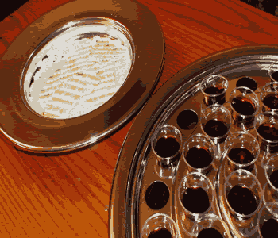

My Belief
I believe in God the Father, in His Son Jesus Christ, and in the Holy Spirit. According to 1 John 5:7 For there are three that bear record in heaven, the Father, the Word, and the Holy Spirit: and these three are one. I believe that Jesus Christ is the head of the church. According to Ephesians 1:22-23 And he put all things under his feet and gave him as head over all things to the church, which is his body, the fullness of him who fills all in all. I believe that the Holy Spirit of God lives in every baptized Christian. According to Acts 2:38 Peter replied, Repent and be baptized, every one of you, in the name of Jesus Christ for the forgiveness of your sins. And you will receive the gift of the Holy Spirit.
I believe that the Bible is the word of God to mankind given to his prophets. According to 2 Peter 1:16-21 For we did not follow cleverly devised stories when we told you about the coming of our Lord Jesus Christ in power, but we were eyewitnesses of his majesty. He received honor and glory from God the Father when the voice came to him from the Majestic Glory, saying, This is my Son, whom I love; with him I am well pleased.
We ourselves heard this voice that came from heaven when we were with him on the sacred mountain. We also have the prophetic message as something completely reliable, and you will do well to pay attention to it, as to a light shining in a dark place, until the day dawns and the morning star rises in your hearts. Above all, you must understand that no prophecy of Scripture came about by the prophet’s own interpretation of things. For prophecy never had its origin in the human will, but prophets, though human, spoke from God as they were carried along by the Holy Spirit.
The Lord's Supper

The participation on every Sunday, as taught by the Word of God in Acts 20:7 On the first day of the week we came together to break bread. Paul spoke to the people and, because he intended to leave the next day, kept on talking until midnight. Is a memorial to do the perfect sacrifice of Christ on the cross. The early church persevered in it. In acts 2:42 They devoted themselves to the apostles’ teaching and to fellowship, to the breaking of bread and to prayer. So, we do it every day of the week (Sunday)
. At dinner there are few moments of self-examination of each participating member shall depart. 1 Corinthians 11:28 But let a man examine himself, and so let him eat of that bread, and drink of that cup.
In the second semester I took the Web Development class online to increase my skills to what I already learned in High School's Web Design class. After starting the class and reading the Head First HTML and CSS book, I knew this was going to be an awesome class. The book and the class were perfect for starting out as a new Web Designer in the making. Everything was simple and easy, but attention was something highly required which I learned the hard way after a few failures. In the blink of an eye, semester is over and I could tell that I have learned a lot out of this class. Now I have to go even further to hone my skills to the fullest.
Conclusion
In conclusion, my beliefs are all in the Bible. The Bible is one I can trust because it comes from God. I might not be the perfect Christian, but I try my best to be one worthy of being in God's happy side. Otherwise is a one-way trip to hell. I didn't mention it but some of my projects in the making are a Christian Video Game and a Christian Trading Card Game. These are 2 interesting projects I would like to finish to help people and for fun as well. Anyways, there are bigger topics when it comes to Bible, God, Jesus, Christianity, Sins, Satan, and more. For more information on this as well, feel free to contact me at anytime. I'll do my best to help, since my Dad is a preacher, I can always get him to help me too. I